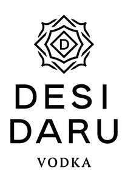

Trade Mark Journal No.2025/026 27 June 2025
UK00004216609 10 June 2025 (32,33,35)

- Class 32
- Soft drinks; Fruit flavored soft drinks; Low-calorie soft drinks; Non-carbonated soft drinks; Coffee-flavored soft drinks; Fruit-flavored soft drinks; Low calorie soft drinks; Soft drinks for energy supply; Soft drinks flavored with tea; Fruit-based soft drinks flavored with tea; Colas [soft drinks]; Carbonated soft drinks; Non-alcoholic bitters; Cordials [non-alcoholic]; Beverages (Non-alcoholic -); Non-alcoholic wines; Non-alcoholic wine; Non alcoholic aperitifs; Non-alcoholic cocktails; Cocktails, non-alcoholic; Cider, non-alcoholic; Aperitifs, non-alcoholic; Non-alcoholic beer; Non-alcoholic beer flavored beverages; Carbonated non-alcoholic drinks; Non-alcoholic carbonated beverages; Root beers, non-alcoholic beverages; Non-alcoholic flavored carbonated beverages; Non-alcoholic soda beverages flavoured with tea.
- Class 33
- Vodka; Spirits; Spirits [beverages]; Potable spirits; Distilled spirits; Digestifs [liqueurs and spirits]; Alcoholic aperitifs; Alcoholic wines; Alcoholic bitters; Alcoholic cocktails; Alcoholic cocktail mixes; Low-alcoholic wine; Low alcoholic drinks; Alcoholic aperitif bitters; Rum [alcoholic beverage]; Alcoholic punches; Prepared alcoholic cocktails; Alcoholic energy drinks; Alcoholic beverages (except beers); Alcoholic beverages, except beer; Alcoholic carbonated beverages, except beer; Aperitifs with a distilled alcoholic liquor base; Flavored brewed alcoholic malt beverages, except beers.
- Class 35
- Advertising services to promote the sale of beverages; Advertising services for the promotion of beverages; Providing consumer product information relating to food or drink products; Unmanned retail store services relating to drink; Wholesale services in relation to alcoholic beverages (except beer); Retail services in relation to alcoholic beverages (except beer); Retail services via global computer networks related to non-alcoholic beverages; Retail services via global computer networks related to alcoholic beverages (except beer); Retail services in relation to non-alcoholic beverages; Retail services relating to alcoholic beverages; Wholesale services in relation to preparations for making beverages; Wholesale services in relation to preparations for making alcoholic beverages.
DESI DARU LTD
Representative: GCS Europe Ltd